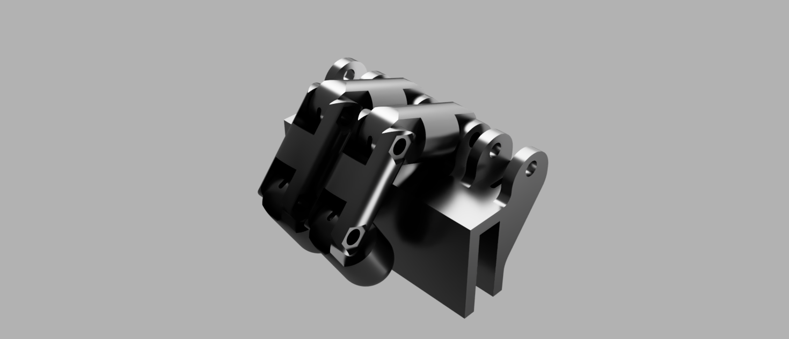
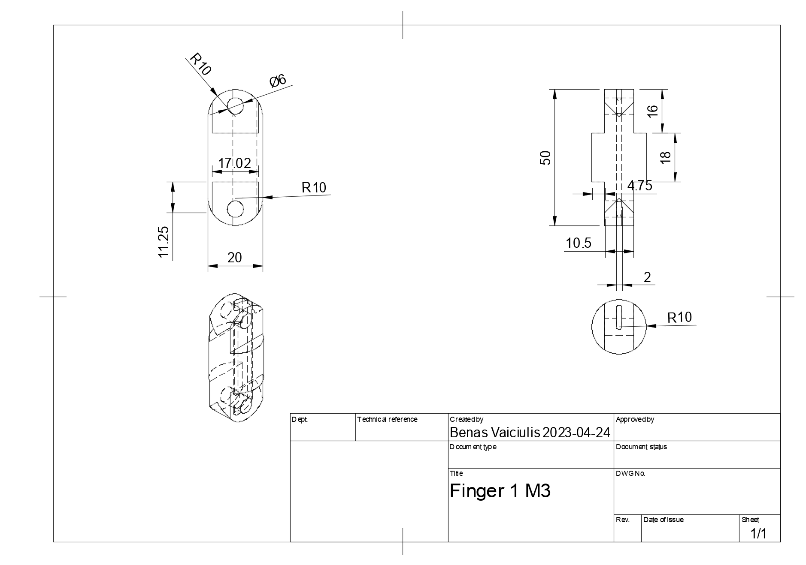
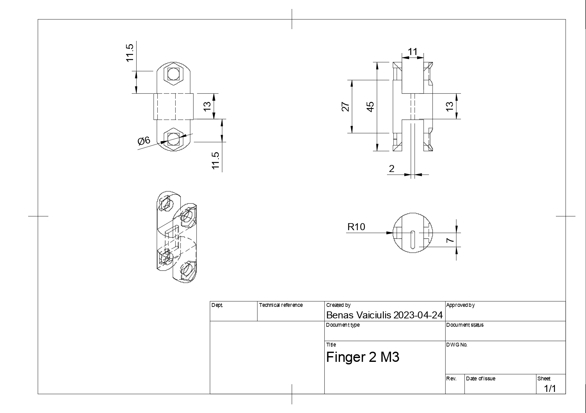
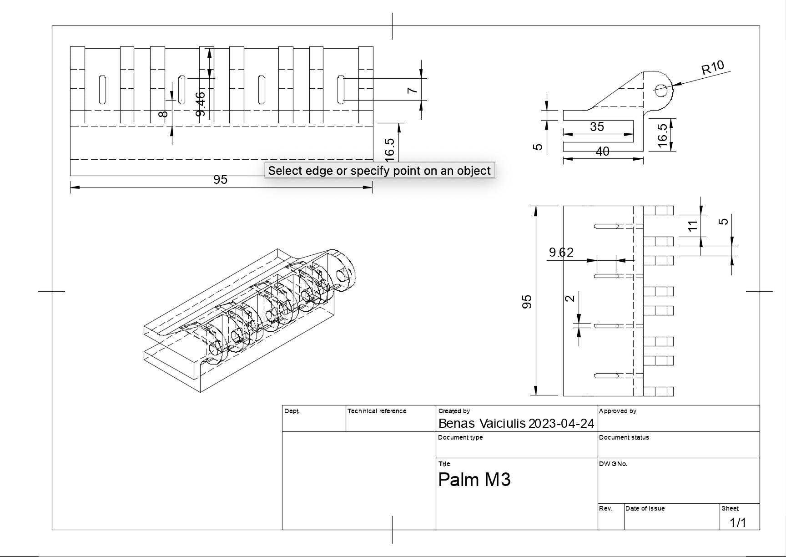

Project
Bionic Hand
Mechanical prosthesis designed for fast, reliable grip.
Project
Mechanical prosthesis designed for fast, reliable grip.
The Bionic Hand project set out to design and fabricate a functional mechanical prosthesis for a bilateral upper-limb amputee. The performance target was clear and demanding: the device had to pick up and carry a 10 kg bag of groceries within five seconds of activation, then allow the user to walk 20 metres while holding it — all triggered by a single button press on the forearm cuff, requiring no use of the opposite limb.
Working as a team of six, we iterated through concept generation, structural analysis, and rapid prototyping to arrive at a four-fingered tendon-driven gripper mounted on a forearm-profile base. The design prioritises simplicity and reliability: fewer actuated joints means fewer points of failure in daily use.


I originated the concept and led the mechanical design from first sketch through to final prototype. This included building the full SolidWorks assembly, producing dimensioned technical drawings for each component, and owning the 3D printing workflow — setting print orientations to maximise layer-direction strength at load-bearing joints and managing post-processing. I also conducted the initial load-case analysis that determined the tendon anchor geometry and finger-segment wall thickness.


